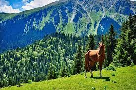
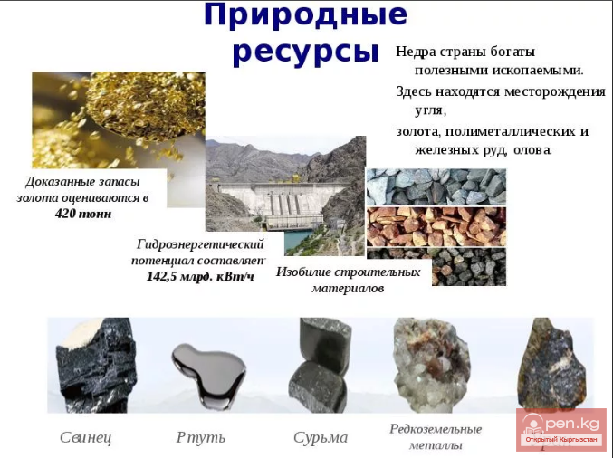
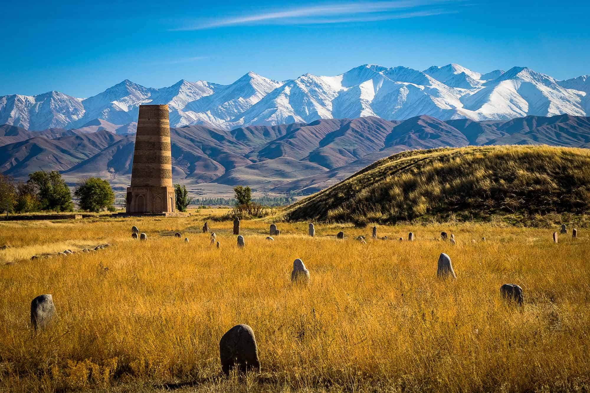
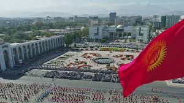

Kyrgyzstan
What is Kyrgyzstan famous for

Kyrgyzstan is famous for its magnificent mountains (Central Tien Shan and Pamir Alai), their high snowy peaks, which are climbed every year by hundreds of outdoor enthusiasts, picturesque lakes, turbulent rivers, frozen glaciers and endless green forests.But all these are just words, words that mean nothing, unable to describe even a thousandth of the real beauty of these places. Of course, you can try to describe these places in words, in principle, and this is exactly what we will try to do further, telling you about each of the Kyrgyz sights separately. But the effect of what you read and see will no doubt be striking, but this will happen only if, of course, you want to verify the correctness of our words in practice by comparing it with the Kyrgyz reality, the extraordinary nature of this country.
How rich is our republic of Kyrgyzstan?
The Kyrgyz Republic has significant potential for many types of natural minerals. On its territory, geologists have discovered several thousand different deposits and ore occurrences of ore and non-metallic minerals. complex long-term geological development of the Kyrgyz Tien Shan has created favorable conditions for the formation of deposits of various types of minerals. Among the main types of minerals: gold, mercury, antimony, rare earths, tin, tungsten, coal, non-metallic raw materials, groundwater. There is a prospect of organizing the extraction of iron, titanium, vanadium, aluminum, copper, molybdenum, and beryllium. The industrial significance of tantalum-niobates, cobalt, zirconium, lithium, and colored stones cannot be ruled out.
Gold. To date, about 2,500 primary occurrences of gold have been found on the territory of Kyrgyzstan. The vast majority of them are very small, not of industrial interest, but several dozen deposits and ore occurrences deserve further study. In terms of gold reserves, unique ones can be distinguished among them - more than 200 tons (Kumtor); large - more than 70 tons (Jerooy, Taldybulak Levoberezhny); medium-30-70 tons (Makmal, Bozymchak, Unkurtash, Ishtamberdy, Altyn-Dzhilga, Tokhtazan); small 5-30 tons (Solton-Sary, Jamgyr, Terek, Perevalnoye, Terekkan) and a large number of objects with predicted resources of less than 5 tons of metal
Actually, the only silver deposit is Kumyshtag, the preliminary estimated reserves and predicted resources of which are 2 thousand tons. Explored reserves of silver are taken into account in gold deposits in the amount of more than 300 tons.
Pariatur deleniti molestias corrupti fuga, praesentium possimus accusantium quibusdam ipsum dolore esse magni suscipit accusamus odit. Totam dolores ex impedit tempora quisquam qui rem, voluptatum, sequi aut corporis ipsum obcaecati eum. Corrupti, architecto saepe iste, minima eos modi perspiciatis voluptatum magnam possimus quae pariatur suscipit illo reiciendis minus explicabo ut non? Excepturi nisi doloribus dolorum, nemo esse vitae a quia officia assumenda, ullam exercitationem porro impedit obcaecati voluptas natus mollitia!

Porro unde id, earum voluptas voluptate ipsum recusandae sapiente beatae minus corrupti, iusto assumenda reprehenderit totam harum in natus ullam qui cum nihil, necessitatibus cupiditate perspiciatis vero molestiae? Iure rerum autem quo nemo distinctio, delectus ipsam cupiditate, aliquid consectetur dolores temporibus consequuntur laudantium accusamus est, deleniti neque praesentium ab necessitatibus. Tenetur, error obcaecati, consequuntur dolor dolorum alias est molestiae necessitatibus accusamus minus accusantium a ratione enim consequatur nesciunt, voluptatem explicabo.
Consequatur, nemo quod. Incidunt esse quia distinctio a, ratione commodi eum perspiciatis quas ut veniam corrupti blanditiis voluptas maiores dolorem neque possimus non modi aliquid exercitationem nesciunt itaque adipisci consectetur alias assumenda. Veniam dolorum, voluptatum, cum inventore eaque quibusdam velit rem quia facere voluptas incidunt eius temporibus natus quam omnis? Itaque, sequi eveniet. Temporibus sequi, beatae in, quibusdam adipisci esse tempore nam, ducimus nulla natus distinctio quis ut obcaecati reiciendis.
Nam eveniet quasi minus vero natus, incidunt mollitia reprehenderit impedit voluptatum quidem! Culpa saepe, assumenda veniam corrupti id deleniti quisquam illo, quibusdam iste sunt ipsa, temporibus facere deserunt alias incidunt obcaecati dolores. Facilis, quos similique. Autem in ipsam eum error tempore corporis aspernatur ex atque quisquam dolore, rerum non iure aut odit consequuntur, nostrum veniam perspiciatis pariatur sapiente, quibusdam excepturi perferendis cumque. Harum, blanditiis quia perferendis quae est dignissimos magni?

Minus odit ut nostrum facere laborum a iste tempora? Explicabo eveniet dolorem nihil, incidunt vel unde earum repellat. A provident unde iste eum qui ipsam nam quidem libero tempora placeat officiis voluptate vel nobis cumque maiores vitae voluptatem quae velit, quos quas? Ea ex repellendus molestias perferendis blanditiis adipisci culpa, minima ullam nam fugiat autem officia nisi porro illo cupiditate soluta suscipit explicabo, nemo deserunt, corporis reprehenderit quos. Nemo, corrupti.